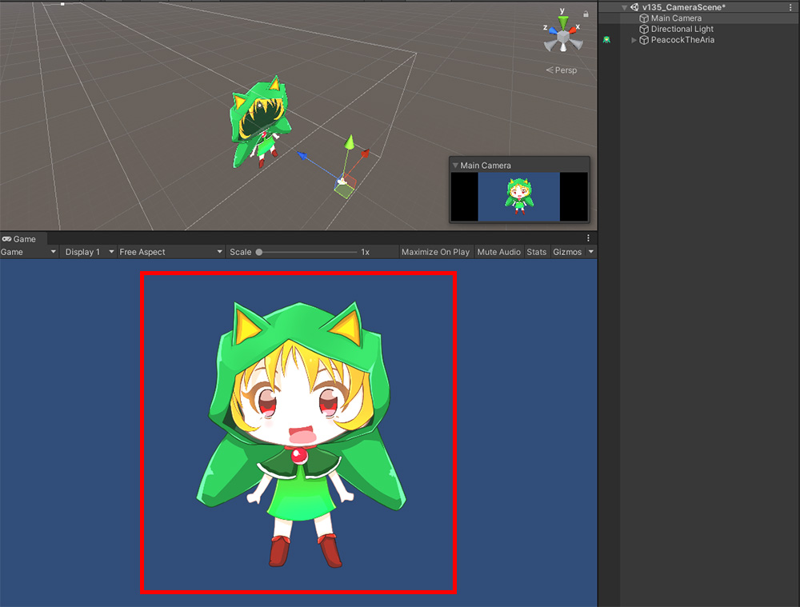
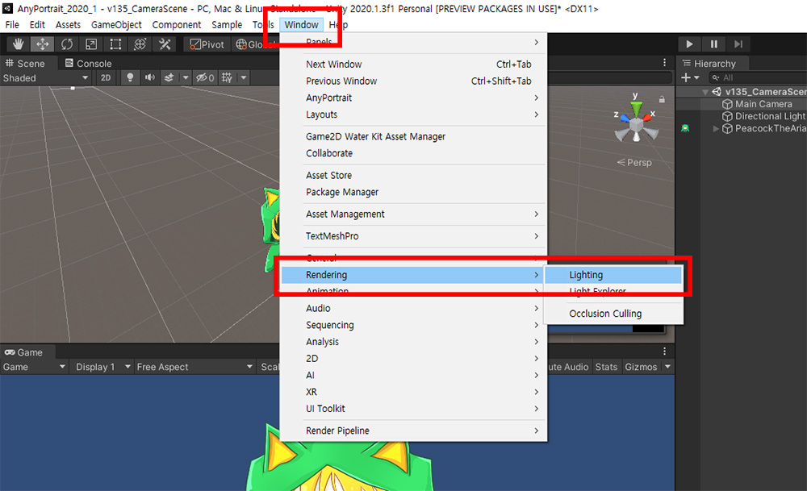
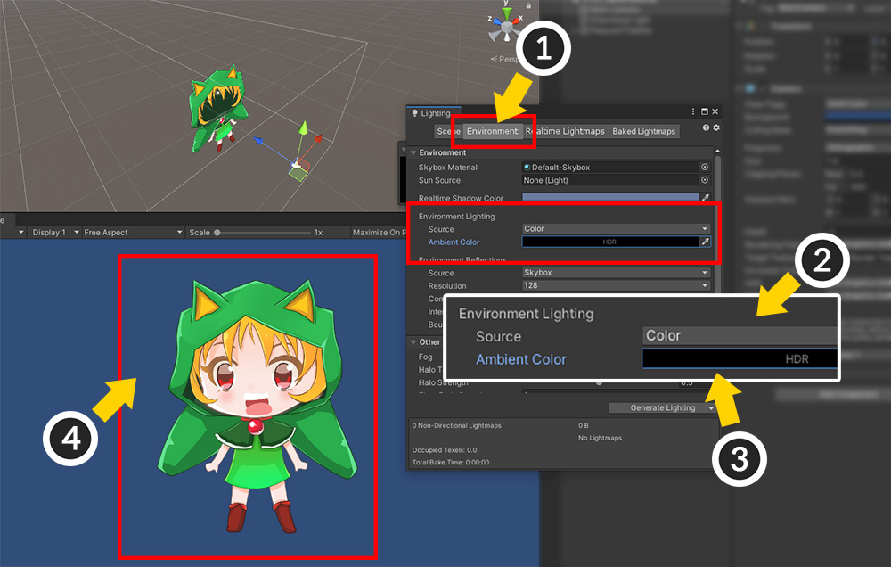
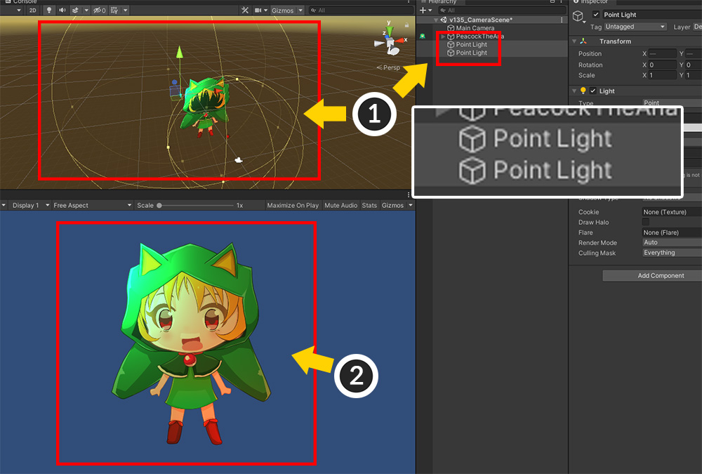

AnyPortrait > マニュアル > シーンの照明設定
シーンの照明設定
1.4.7
AnyPortraitで作業したキャラクターは、Unityシーンでは明るく過度に見えることがあります。
これは、AnyPortraitの基本マテリアルが「Ambient Color」の影響を受けるためです。
逆に、光の影響を受けるように設定する必要がある場合もあります。
このページでは、Unityシーンでライティング設定を行う方法について簡単に説明します。
画像の元の色が見えるように設定
基本マテリアル(Unlit)を利用する場合、イメージの色がそのままレンダリングされるように設定してみましょう。

AnyPortraitエディタで制作したキャラクターを「Bake」をした後、Unityシーンで確認した結果です。
元の画像よりやや明るくレンダリングされた状態です。
Unityは3Dゲームエンジンなので、初めてプロジェクトを作成してシーンを作成すると基本的に光が追加されています。
しかし、ここでは、これらの光の設定はむしろ画像の色を正しく表現しません。

Unityメニューから、Window > Rendering > Lightingを選択します。
(「Lighting」メニューの位置は Unity バージョンによって異なる場合があります。)

(1) 「Environment」タブを選択します。
(2) 「Environment Lighting」の「Source」の値を「Color」に変更します。
(3) 「Ambient Color」を「黒」に変更します。
(4) 色が正常に表示されることがわかります。

Unityのデフォルトシーンには「Directional Light」が配置されています。
しかし、この場合は光は必要ありません。
(1) 「Directional Light」を含めてシーンに配置された光オブジェクトを削除します。
参考
「Unlit」マテリアルを使用する場合、「Bake」を行うと自動的に「Ambient Color」を「黒」に変更する機能が動作します。
これについての詳細は、関連ページを参照してください。
変更された基本「Unlit」素材
1.4.7
「AnyPortrait v1.4.7」で基本マテリアルとして追加された「Unlit (v2)」を利用すれば、上記のライティング初期化作業を行う必要がなくなります。
(関連ページ)
光の影響を受けるように設定
今度は逆に、「Lit」マテリアルを使って光によって明るくなるか暗くなるように設定してみましょう。

「マテリアルライブラリ」（関連ページ）を使用して、「Litマテリアル」または「Litに似たマテリアル」に設定されています。

光がなければ、ユニティシーンではキャラクターが暗くレンダリングされます。
(1) 上記の「Lighting」設定の「Ambient Color」を「黒以外の色」に設定します。
(2) キャラクターの色が光によって変わるのがわかります。

(1) 光オブジェクトをシーンに配置すると、(2) 光に応じて素敵にレンダリングされたキャラクターを見ることができます。
参考
「URP 2D」を使用する場合は、他の種類の光を使用する必要があります。
これについては、関連ページを参照してください。